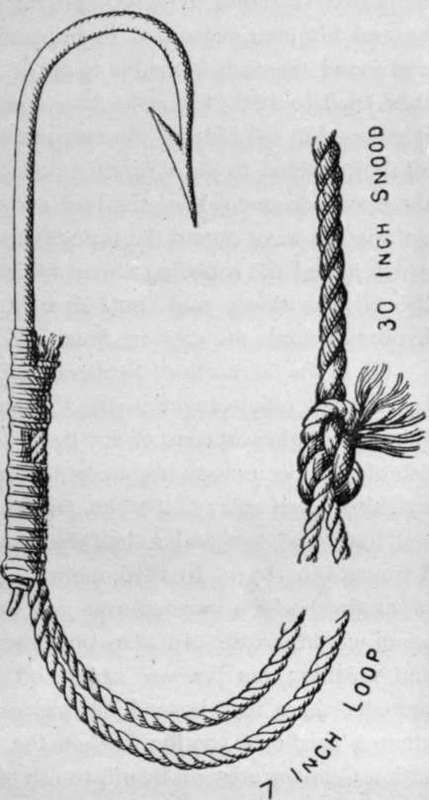

Chapter XII. Flat Sided And Flat Backed Fishes
Description
This section is from the book "Sea Fishing", by John Bickerdyke. Also available from Amazon: Sea Fishing.
Chapter XII. Flat Sided And Flat Backed Fishes
Certain of the flat fish take a high place among the freaks which Nature loves to produce. Regard a fishmonger's slab and note the expression on the face of sole, dab, or flounder— the kind of paralytic twist in the mouths of these fish which gives them an unamiable and perpetual sneer. So far as the plaice is concerned, the supercilious appearance together with the red spots are well accounted for by a very old legend which is, or was, current in the Isle of Man. There had been disputes among the fish of the sea, happily ending with a general consensus of opinion that the election of a king to settle their quarrels was desirable. So a great meeting was held. The plaice, however, stayed at home overlong, covering himself with red spots so as to appear beautiful and worthy of being elected ruler over the inhabitants of the ocean. When he arrived at the meeting-place he found another had been chosen. Giving his mouth that disdainful twist which it now exhibits, he remarked, ' Fancy a simple fish like a herring being King of the Sea !' And fate so ordered it that he should wear those red spots and that proud sneer for ever.
Soles, dabs, and flounders neither lie nor swim on their bellies, but on one side which is light in colour, the other being dark. If we would discover how this came about, we may either consult works on natural history or the legends of Upper Egypt. Let us take the legend first. Moses, so it was said, was once frying a flat fish, but just as one side was done the oil in the pan dried up and no more was available. A practical man would have eaten the cooked side and left the raw portion for further consideration ; but Moses, greatly irritated, cast the half-fried fish into the sea. The creature came to life, and ever since that day has been brown on one side and white on the other. Notwithstanding the above narrative, let it be confessed that there are fish which I may term ' done on both sides'—that is to say, though true flat fish, for some reason or other they have developed colour on both sides ; but these are rare. They are, however, said to be better eating than the parti-coloured flat fish. Disregarding the Egyptian legend, it would seem that the colouring on one side of the flat fish is a provision of nature by which the fish, assimilating itself to the appearance of the ground on which it lies, or in which it buries itself, is not easily seen by its enemies. In foreign seas there are certain flat fish which are found among coral reefs, and these are ornamented with rather striking colours.
I have called these flat fish remarkable freaks of nature because, when hatched, they are coloured on both sides alike and swim back upwards like any ordinary fish. Being very thin from side to side and very deep from back to belly, in the' course of a week or two they begin to topple over and swim on their side. Then follows a marvel. The eye which regards the bottom of the sea soon wearies of the prospect and gradually moves until it reaches the uppermost side, where it remains for the rest of the fish's life. This remarkable phenomenon was observed many years ago. How such an extraordinary change of appearance takes place has been a subject of considerable difference of opinion among naturalists. Some have said that the eye works round under the skin and by the snout, others that it passes under the frontal or forehead bone of the fish right through to the other side, and some that it actually cuts through the forehead bone in its course. This remarkable change occurs when the fish is very young and the bones are soft and cartilaginous. All that the unscientific person will observe is that the eye on the under side gradually becomes depressed, while a round and dark spot appears on the upper side of the fish in the place where the eye is destined to break through. Gradually the spot above develops into an eye, and the eye underneath totally disappears. Professor Alexander Agassiz, writing in 1879, appeared to think that the eye was transferred either by translation or rotation ; that is to say, in some instances the travelling eye would go round the head by the snout, while in others it appeared to pass right through the tissues of the head.
Another curious fact about flat fish is that some have their pair of eyes on the right side, while others have them on the left. But even among those species which I may term 'right-eyed ' the left side is occasionally chosen to simulate the back of the fish. Those rare examples which are coloured on both sides are sometimes termed ' double fish,' and these, by the way, swim in a vertical position—which explains their colouring— and more often leave the bottom of the sea than do the rest. Occasionally flat fish are found which are white on both sides.
The principal flat fish possessing the remarkable peculiarities ' described belong to the family called Pleuronectidce, which includes the halibut, turbot, brill, sole, plaice, flounder, dab, and solonette. Of these, the dab, plaice and flounder are undoubtedly the most important from a sportsman's point of view, while the turbot, brill, and sole appeal more to the gourmet. Let each now be more particularly described. First, then, The Halibut (Hippoglossus vulgaris) is the largest, British, side-swimming, flat fish. It is often called turbot in Scotland, old or very dark halibut going by the name of blacksmiths on the East coast. Another pseudonym is workhouse turbot. In home waters halibut are most often caught on lines set for other fish—a haddock of a couple of pounds or so is hooked, and the huge flat fish engorges the haddock. I have given some account of the gear and baits used in the Faroe waters for this fish on pages 287-9. In the Moray Firth the bait used is a piece of plaice, but a halibut will take the usual cod and turbot baits. As a rule, when a halibut is hooked on a hand line it breaks away, and when it seeks to rob a long line it is so large and powerful that it has been known to go off with line, hooks, stones, and buoys. Halibut are found on the cod grounds in deepish water, and, like the lemon sole, rather affect the neighbourhood of rocks.
Halibut Hook And Snood, Faroe Fishery (Actual Size).
One summer, when I was at Rhiconich, on the coast of Sutherlandshire, a man appeared at our evening repast in a most downcast mood, having lost an enormous halibut. He had been fishing for cod, and hooked the big creature, which he played, or rather it played him, for over an hour. At last, he and his men succeeded in bringing it up to the surface, and found themselves unable to get it into the boat. Vainly they tried to stick fishhooks into it so that they might tow it ashore, but the hide of the creature was too tough. Last of all they decided to get a running noose round it, and while all three were on one side of the boat endeavouring to do this, an unexpected wave caused the little craft to give a sudden lurch, which jerked the snooding a man was holding, snapped it, and the big fish slowly sank out of sight. I forget how many hundred pounds the creature weighed.
Up in the far north of Scotland halibut are fairly plentiful, but are not often caught in the Channel. They are not uncommon on the east coast of Scotland. A number of enormous fish of this species have been recorded from time to time. One weighing seven and a half stone, and measuring five and a half feet long, and two and a half feet broad, was brought into Yarmouth in 1873. In 1876 one was caught on the East coast of England which weighed over 300 lbs., and was more than seven feet in length. In 1829 one seven and a half feet long and weighing 320 lbs. was caught off the Isle of Man. In more northern seas beyond our shores these fish sometimes attain a weight of 500 lbs. When the first steamer left Hull with a Grimsby crew on board, to fish the Faroe waters as an experiment, they took with them nine miles of line. They returned with over a thousand halibut, weighing from one to nine stone each.
Continue to:
Tags
fishing, hooks, bait, fishermen, spanish mackerel, mackerel fishing